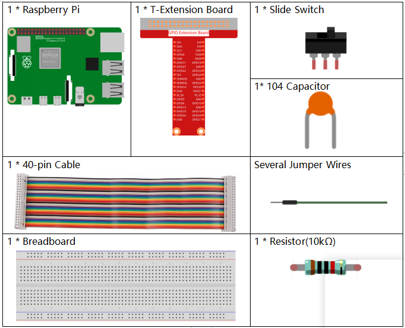
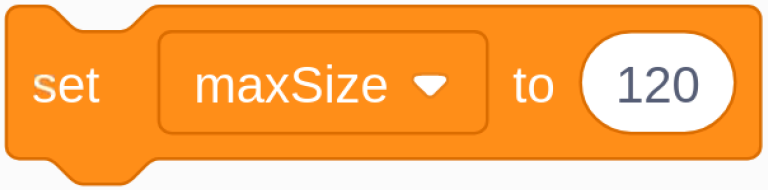
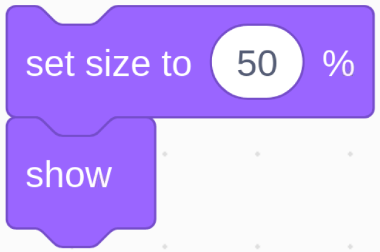

Nota
¡Hola! Bienvenido a la comunidad de entusiastas de SunFounder para Raspberry Pi, Arduino y ESP32 en Facebook. Únete a otros apasionados y profundiza en el mundo de Raspberry Pi, Arduino y ESP32.
¿Por qué unirte?
Soporte Experto: Resuelve problemas posventa y supera desafíos técnicos con el apoyo de nuestra comunidad y equipo.
Aprende y Comparte: Intercambia consejos y tutoriales para mejorar tus habilidades.
Acceso Exclusivo: Obtén acceso anticipado a anuncios de nuevos productos y adelantos especiales.
Descuentos Especiales: Disfruta de descuentos exclusivos en nuestros productos más recientes.
Promociones Festivas y Sorteos: Participa en sorteos y promociones durante las festividades.
👉 ¿Listo para explorar y crear con nosotros? Haz clic en [Aquí] y únete hoy.
1.9 Inflar el Globo
Aquí jugaremos a inflar un globo.
Al mover el deslizador a la izquierda, comenzará a inflar el globo, que se hará cada vez más grande. Si el globo es demasiado grande, explotará; si es muy pequeño, no flotará en el aire. Debes decidir cuándo mover el interruptor a la derecha para dejar de inflarlo.

Componentes Necesarios
Construye el Circuito

Carga el Código y Observa Qué Sucede
Carga el archivo de código (1.9_inflating_the_balloon.sb3) en Scratch 3.
Al mover el deslizador a la izquierda, comenzará a inflar el globo, que se hará cada vez más grande. Si el globo es demasiado grande, explotará; si es muy pequeño, no flotará en el aire. Debes decidir cuándo mover el interruptor a la derecha para dejar de inflarlo.
Consejos sobre el Sprite
Elimina el sprite Sprite1 anterior y agrega el sprite Balloon1.

En este proyecto se utiliza un efecto de sonido de explosión de globo, así que veamos cómo se agregó.
Haz clic en la opción Sonido en la parte superior, luego en Subir sonido para cargar boom.wav desde la ruta davinci-kit-for-raspberry-pi/scratch/sound en Scratch 3.

Consejos sobre el Código

Este es un bloque de evento, y la condición de activación es que gpio17 esté alto, es decir, el interruptor se ha movido a la izquierda.
{kind=link}
Establece el tamaño máximo del sprite Balloon1 en 120.

Mueve las coordenadas del sprite Balloon1 a (0,0), que es el centro del área del escenario.
{kind=link}
Configura el tamaño del sprite Balloon1 en 50 y muéstralo en el área del escenario.

Configura un bucle para inflar el globo; este bucle se detiene cuando el interruptor del deslizador se mueve a la derecha.
Dentro de este bucle, el tamaño del globo aumenta en 1 cada 0.1s, y si es mayor que maxSize, el globo explotará, en cuyo momento se activa el sonido de explosión y el código se termina.

Después de que el bucle finaliza (el deslizador se mueve a la derecha), se determina la posición del sprite Balloon1 en función de su tamaño. Si el tamaño del Balloon1 es mayor que 90, se eleva (mueve las coordenadas a (0, 90)), de lo contrario, aterriza (mueve las coordenadas a (0, -149)).